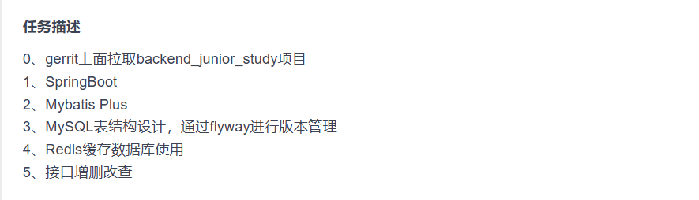

# 环境部署
# gerrit 以及连接公司仓库
19625@chenchen MINGW64 /g/TuoShenProjects/backend_junior_study (master)
$ git status
On branch master
Your branch is up to date with 'origin/master'.
Changes to be committed:
(use "git restore --staged <file>..." to unstage)
new file: chenhang/.gitignore
new file: chenhang/.mvn/wrapper/maven-wrapper.properties
new file: chenhang/mvnw
new file: chenhang/mvnw.cmd
new file: chenhang/pom.xml
new file: chenhang/src/main/java/com/chenhang/ChenhangApplication.java
new file: chenhang/src/main/java/com/chenhang/config/RedisConfig.java
new file: chenhang/src/main/java/com/chenhang/controller/ArticleController.java
new file: chenhang/src/main/java/com/chenhang/controller/UserController.java
new file: chenhang/src/main/java/com/chenhang/mapper/ArticleMapper.java
new file: chenhang/src/main/java/com/chenhang/mapper/UserMapper.java
new file: chenhang/src/main/java/com/chenhang/model/Article.java
new file: chenhang/src/main/java/com/chenhang/model/User.java
new file: chenhang/src/main/java/com/chenhang/service/ArticleService.java
new file: chenhang/src/main/java/com/chenhang/service/UserService.java
new file: chenhang/src/main/java/com/chenhang/service/impl/ArticleServiceImpl.java
new file: chenhang/src/main/java/com/chenhang/service/impl/UserServiceImpl.java
new file: chenhang/src/main/java/com/chenhang/utils/Result.java
new file: chenhang/src/main/java/com/chenhang/utils/ResultCodeEnum.java
new file: chenhang/src/main/resources/META-INF/spring/org.springframework.boot.autoconfigure.AutoConfiguration.imports
new file: chenhang/src/main/resources/application.yaml
new file: chenhang/src/main/resources/db/migration/R1.0.1__Add_Posts.sql
new file: chenhang/src/main/resources/mapper/ArticleMapper.xml
new file: chenhang/src/main/resources/mapper/UserMapper.xml
new file: chenhang/src/test/java/com/chenhang/ChenhangApplicationTests.java
19625@chenchen MINGW64 /g/TuoShenProjects/backend_junior_study (master)
$ git restore --staged chenhang/
19625@chenchen MINGW64 /g/TuoShenProjects/backend_junior_study (master)
$ git status
On branch master
Your branch is up to date with 'origin/master'.
Untracked files:
(use "git add <file>..." to include in what will be committed)
chenhang/
nothing added to commit but untracked files present (use "git add" to track)
19625@chenchen MINGW64 /g/TuoShenProjects/backend_junior_study (master)
$ git add chenhang/
warning: in the working copy of 'chenhang/.gitignore', LF will be replaced by CRLF the next time Git touches it
warning: in the working copy of 'chenhang/.mvn/wrapper/maven-wrapper.properties', LF will be replaced by CRLF the next time Git touches it
warning: in the working copy of 'chenhang/mvnw', LF will be replaced by CRLF the next time Git touches it
warning: in the working copy of 'chenhang/mvnw.cmd', LF will be replaced by CRLF the next time Git touches it
warning: in the working copy of 'chenhang/pom.xml', LF will be replaced by CRLF the next time Git touches it
warning: in the working copy of 'chenhang/src/main/java/com/chenhang/ChenhangApplication.java', LF will be replaced by CRLF the next time Git touches it
warning: in the working copy of 'chenhang/src/main/java/com/chenhang/model/Article.java', LF will be replaced by CRLF the next time Git touches it
warning: in the working copy of 'chenhang/src/main/java/com/chenhang/model/User.java', LF will be replaced by CRLF the next time Git touches it
warning: in the working copy of 'chenhang/src/main/resources/mapper/UserMapper.xml', LF will be replaced by CRLF the next time Git touches it
warning: in the working copy of 'chenhang/src/test/java/com/chenhang/ChenhangApplicationTests.java', LF will be replaced by CRLF the next time Git touches it
# 提交
19625@chenchen MINGW64 /g/TuoShenProjects/backend_junior_study (master)
$ git commit -m "add demo"
[master d268307] add demo
25 files changed, 1342 insertions(+)
create mode 100644 chenhang/.gitignore
create mode 100644 chenhang/.mvn/wrapper/maven-wrapper.properties
create mode 100644 chenhang/mvnw
create mode 100644 chenhang/mvnw.cmd
create mode 100644 chenhang/pom.xml
create mode 100644 chenhang/src/main/java/com/chenhang/ChenhangApplication.java
create mode 100644 chenhang/src/main/java/com/chenhang/config/RedisConfig.java
create mode 100644 chenhang/src/main/java/com/chenhang/controller/ArticleController.java
create mode 100644 chenhang/src/main/java/com/chenhang/controller/UserController.java
create mode 100644 chenhang/src/main/java/com/chenhang/mapper/ArticleMapper.java
create mode 100644 chenhang/src/main/java/com/chenhang/mapper/UserMapper.java
create mode 100644 chenhang/src/main/java/com/chenhang/model/Article.java
create mode 100644 chenhang/src/main/java/com/chenhang/model/User.java
create mode 100644 chenhang/src/main/java/com/chenhang/service/ArticleService.java
create mode 100644 chenhang/src/main/java/com/chenhang/service/UserService.java
create mode 100644 chenhang/src/main/java/com/chenhang/service/impl/ArticleServiceImpl.java
create mode 100644 chenhang/src/main/java/com/chenhang/service/impl/UserServiceImpl.java
create mode 100644 chenhang/src/main/java/com/chenhang/utils/Result.java
create mode 100644 chenhang/src/main/java/com/chenhang/utils/ResultCodeEnum.java
create mode 100644 chenhang/src/main/resources/META-INF/spring/org.springframework.boot.autoconfigure.AutoConfiguration.imports
create mode 100644 chenhang/src/main/resources/application.yaml
create mode 100644 chenhang/src/main/resources/db/migration/R1.0.1__Add_Posts.sql
create mode 100644 chenhang/src/main/resources/mapper/ArticleMapper.xml
create mode 100644 chenhang/src/main/resources/mapper/UserMapper.xml
create mode 100644 chenhang/src/test/java/com/chenhang/ChenhangApplicationTests.java
19625@chenchen MINGW64 /g/TuoShenProjects/backend_junior_study (master)
$ gitdir=$(git rev-parse --git-dir); scp -p -P 29418 henhang@review.tpson.cn:hooks/commit-msg ${gitdir}/hooks/
subsystem request failed on channel 0
scp: Connection closed
# -O open 打开此（好吧我也不知道）
19625@chenchen MINGW64 /g/TuoShenProjects/backend_junior_study (master)
$ gitdir=$(git rev-parse --git-dir); scp -O -P 29418 henhang@review.tpson.cn:hooks/commit-msg ${gitdir}/hooks/
commit-msg 100% 4693 44.7KB/s 00:00
# 提交 -m 描述
19625@chenchen MINGW64 /g/TuoShenProjects/backend_junior_study (master)
$ git commit --amend
[master 7ec50ca] add demo
Date: Fri Aug 23 16:10:50 2024 +0800
25 files changed, 1342 insertions(+)
create mode 100644 chenhang/.gitignore
create mode 100644 chenhang/.mvn/wrapper/maven-wrapper.properties
create mode 100644 chenhang/mvnw
create mode 100644 chenhang/mvnw.cmd
create mode 100644 chenhang/pom.xml
create mode 100644 chenhang/src/main/java/com/chenhang/ChenhangApplication.java
create mode 100644 chenhang/src/main/java/com/chenhang/config/RedisConfig.java
create mode 100644 chenhang/src/main/java/com/chenhang/controller/ArticleController.java
create mode 100644 chenhang/src/main/java/com/chenhang/controller/UserController.java
create mode 100644 chenhang/src/main/java/com/chenhang/mapper/ArticleMapper.java
create mode 100644 chenhang/src/main/java/com/chenhang/mapper/UserMapper.java
create mode 100644 chenhang/src/main/java/com/chenhang/model/Article.java
create mode 100644 chenhang/src/main/java/com/chenhang/model/User.java
create mode 100644 chenhang/src/main/java/com/chenhang/service/ArticleService.java
create mode 100644 chenhang/src/main/java/com/chenhang/service/UserService.java
create mode 100644 chenhang/src/main/java/com/chenhang/service/impl/ArticleServiceImpl.java
create mode 100644 chenhang/src/main/java/com/chenhang/service/impl/UserServiceImpl.java
create mode 100644 chenhang/src/main/java/com/chenhang/utils/Result.java
create mode 100644 chenhang/src/main/java/com/chenhang/utils/ResultCodeEnum.java
create mode 100644 chenhang/src/main/resources/META-INF/spring/org.springframework.boot.autoconfigure.AutoConfiguration.imports
create mode 100644 chenhang/src/main/resources/application.yaml
create mode 100644 chenhang/src/main/resources/db/migration/R1.0.1__Add_Posts.sql
create mode 100644 chenhang/src/main/resources/mapper/ArticleMapper.xml
create mode 100644 chenhang/src/main/resources/mapper/UserMapper.xml
create mode 100644 chenhang/src/test/java/com/chenhang/ChenhangApplicationTests.java
# 推送
19625@chenchen MINGW64 /g/TuoShenProjects/backend_junior_study (master)
$ git push origin HEAD:refs/for/master
Enumerating objects: 53, done.
Counting objects: 100% (53/53), done.
Delta compression using up to 16 threads
Compressing objects: 100% (42/42), done.
Writing objects: 100% (52/52), 17.40 KiB | 685.00 KiB/s, done.
Total 52 (delta 8), reused 1 (delta 0), pack-reused 0 (from 0)
remote: Resolving deltas: 100% (8/8)
remote: Processing changes: new: 1, refs: 1, done
remote:
remote: New Changes:
remote: http://review.tpson.cn/85511 add demo
remote:
To ssh://review.tpson.cn:29418/backend_junior_study
* [new reference] HEAD -> refs/for/master
# 任务

# spring boot 常用依赖
SpringBoot 项目常用的 pom.xml 依赖 - 腾讯云开发者社区 - 腾讯云 (tencent.com)
# Mybatis Plus 生成代码
# flyway
Spring Boot 3.0 : 集成 flyway 数据库版本控制工具_springboot3 flyway-CSDN 博客
# Redis
Spring Boot 整合 Redis 全面教程：从配置到使用_springboot 配置 redis-CSDN 博客
# 接口增删改查
mybatis-plus 中 wrapper 的用法（详细）_mybatisplus wrapper-CSDN 博客